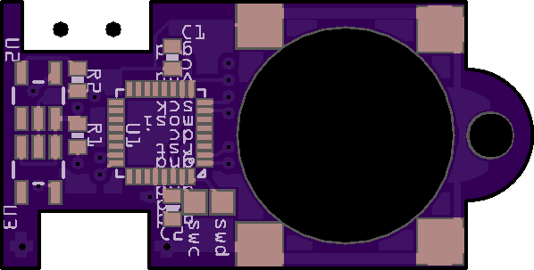

Sunken Components¶
Published on 2018-07-04 in Video Pendant.
I have the promised design of the pendant using a QFN package of the SAMD21. I’m also experimenting with reducing the thickness of the whole device, by making holes for the battery, USB socket and power switch, and mounting them inside those holes. I’m curious how this will work.

In the mean time, I dropped the touch pads, so no touch sensing in this version. But it’s probably not going to be final, I still have to experiment with getting rid of the mechanical switch and using something else in its place, so that I could drown the whole thing in resin. I wonder if I could keep the USB socket, but fill it with something like wax before casting.